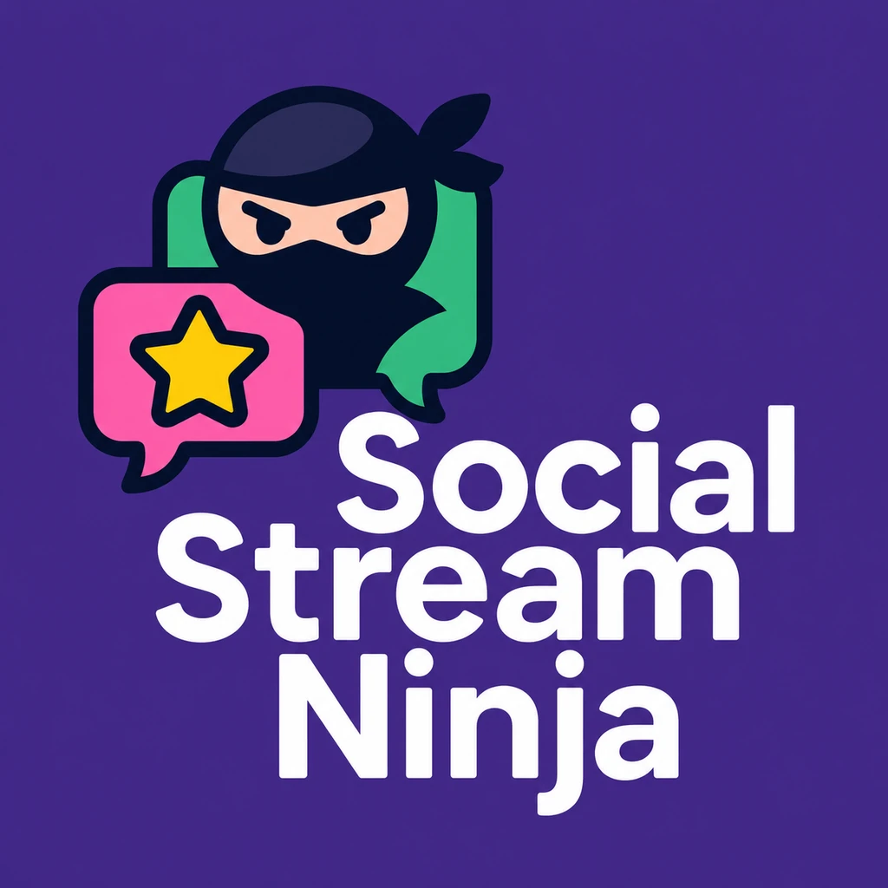
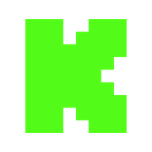
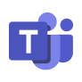
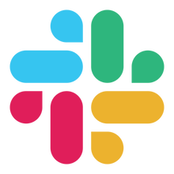
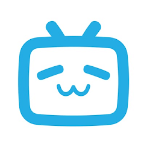

Make it yours
Choose a theme, change the CSS, or build a custom overlay. Shape your chat and alerts to fit your stream.
Bring messages from YouTube, Twitch, TikTok, Facebook, Kick, and more into one dashboard. Make it your own with custom overlays, alerts, text-to-speech, and automation.

Facebook、Youtube、Twitch、Zoom、Instagram、TikTokなどに、1つのダッシュボードから接続できます。
カスタマイズ可能なテーマとアニメーションで、選んだメッセージを配信に表示します。
Build triggers and actions in the visual Event Flow editor, or set up chat commands and timers.
Celebrate follows, memberships, donations, and other supported events with animations and sounds.
無料・有料のTTSサービスでチャットメッセージを音声に変換します。
プラットフォーム間チャットで、あるプラットフォームのメッセージを別のプラットフォームへ自動送信します。
バトルロイヤルのミニゲームや視聴者参加ツールで、チャットを盛り上げます。
カスタマイズ可能なテーマで、参加型アンケート、投票、プレゼント企画を実施できます。
Start with ready-made overlays and settings. Go further with your own designs, integrations, and hosting.
お気に入りのあらゆるプラットフォームで視聴者とつながる



")









100以上のプラットフォームに対応！
一覧を見る →親切なコミュニティと開発者からすぐにサポートを受けられます